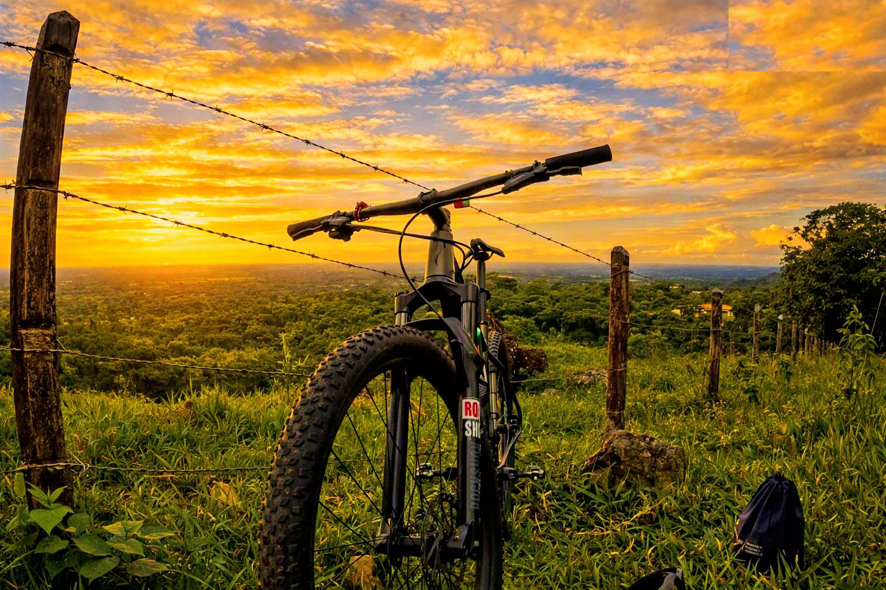

Rutas MTB
Encuentra diferentes rutas para practicar Mountain Bike y disfrutar de los paisajes naturales de la región.
- Rutas de montaña
- Rutas de alta dificultad
- Rutas para diferentes niveles
Explora, pedalea y descubre nuevas rutas

Encuentra diferentes rutas para practicar Mountain Bike y disfrutar de los paisajes naturales de la región.
Explora fotografías de nuestras rutas, bicicletas y paisajes.
¿Quieres compartir una ruta o conocer más información?
Puedes ponerte en contacto con nosotros.
VILLA MTB es un espacio dedicado a los amantes de la bicicleta de montaña, las rutas y la aventura.